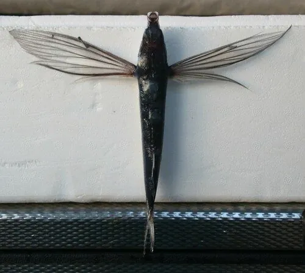

鱼类 · 动物界
翱翔飞鱼 Exocoetus volitans

胸鳍特化成翼状、能跃出水面滑翔数十米的小型远洋鱼类，是热带海洋中著名的“会飞的鱼”，也是大型鱼类的饵料。
- 分类
- 门脊索动物门纲硬骨鱼纲目颌针鱼目科飞鱼科属飞鱼属
- 栖息环境
- 全球热带和亚热带海洋的表层，常成群活动
- 地理分布
- 太平洋、大西洋和印度洋的热带、亚热带海域
- 保护级别
- 暂无评估；中国未列入国家重点保护野生动物名录
物种志
翱翔飞鱼体呈长梭形，胸鳍特别宽大，展开时像一对翅膀；腹鳍也较大，可以在滑翔时提供辅助。体色背部深蓝，腹部银白，尾鳍深叉，下叶比较长。成鱼体长一般 15–25 cm，体型在远洋鱼类中属于较小的一类。
翱翔飞鱼分布于全球热带和亚热带海洋的表层，常成群活动。它以浮游甲壳类和小鱼为食。受惊时，飞鱼先用尾部快速拍打水面获得初速度，跃出水面后展开胸鳍在空中滑翔，一次可滑翔数十米，遇到上升气流时还能连续滑翔更远，这是它躲避金枪鱼、旗鱼、鲯鳅等天敌的重要方式。繁殖时，飞鱼把卵产在漂浮的马尾藻等物体上，卵带有黏丝，可以附着在漂浮物表面孵化。飞鱼是海洋食物链中的重要一环，既是大型鱼类的饵料，也是部分沿海地区的传统食物。目前它没有IUCN 的正式评估，中国未将其列入国家重点保护野生动物名录。
形态与习性
- 食性以浮游甲壳类和小鱼为食
- 体长一般 15–25 cm
- 滑翔一次滑翔可达 30–50 m，借助气流可滑翔更远
- 繁殖把卵产在漂浮物上，卵带黏丝附着孵化
- 天敌金枪鱼、旗鱼、鲯鳅和海鸟
- 习性成群活动，受惊时跃出水面滑翔躲避捕食者
趣味知识
- 飞鱼的胸鳍像翅膀，跃出水面后能在空中滑翔数十米。
- 它滑翔前会用尾部快速拍打水面，获得起飞的初速度。
- 飞鱼把卵产在漂浮的马尾藻等物体上，卵带有黏丝。